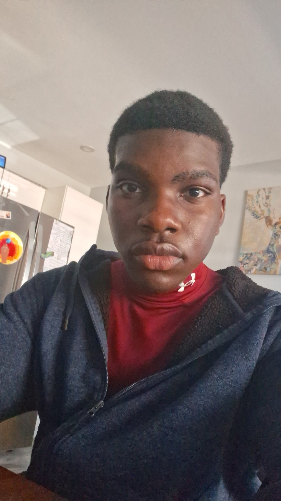

Hello, my name is Daniel Mould and I am a student at St Clair College studying Computer Programming. This is my portfolio website where I will showcase my projects and assignments completed throughout the duration of my program. The reason i chose computer programming is because I have always had an interest in technology and how software works. I enjoy problem solving and logical thinking, which are essential skills for a career in programming. Another reason I chose this field is because I love the idea of creating something from scratch and seeing it come to life. Programming allows me to do just that, whether it's developing a website, mobile app, or software application. Overall, I am excited to pursue a career in computer programming and look forward to the opportunities and challenges that come with it.
